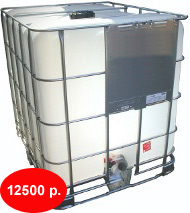

Пластиковые емкости для воды
ЗАО "Энергоцентр" поставляет пластиковые емкости для воды объемом до 15 куб.м.
Пластиковые емкости предназначены для стационарного хранения пищевых продуктов (безограничений), питьевой воды, агрессивных сред (по согласованию), дизельного топлива. Пластиковые емкости представляют собой цельнолитые бесшовные оболочки из полиэтилена. Температура окружающей среды и рабочей жидкости (продуктов) от -40oС до +50oС. Емкости не предназначены для работы под давлением.
Пластиковые емкости для воды 12 куб.м. в машине
Стандартные цвета: белый и синий. Для питьевой воды рекомендуется использовать пластиковые емкости синего цвета.
На пластиковые емкости выдаются паспорта. Гарантия на заводской брак 1 год.
Преимущества пластиковых емкостей:
- Пластиковые емкости долговечны
- Низкая стоимость (по сравнению с баками из нержавеющей стали)
- Малая масса (легкость в проведении погрузочно-разгрузочных и монтажно-строительных работ)
- Большая толщина стенки
- Высокие гигиенические свойства и коррозийная устойчивость
- Легкость в организации дополнительных входов и выходов при монтаже
- Пластиковые емкости легко ремонтируются (разогретым воздухом и сварочным прутком)
Пластиковые емкости для воды вертикальные
Наиболее популярны цилиндрические вертикальные емкости. Выпускаются емкости объемом от 200 литров до 15 куб.метров.
Такие емкости предназначены для стационарного хранения воды и других жидкостей. Комплектуются крышкой с дыхательным клапаном или глухой крышкой. Диаметр люка 380 мм для емкостей до 4,5 куб.метров и 540 мм для емкостей 8 куб.метров, 12 куб.метров и 15 куб.метров. Такие люки позволяют производить обслуживание емкостей внутри емкости.
По согласованию с заказчиком, емкости могут быть доработаны - выполнены сливные и заливные отверстия, выполнен приямок для полного слива жидкости, укомплектованы штуцерами, заглушками, запорной арматурой и т.д.
Емкости имеют паспорт, гигиенический сертификат. Вертикальные пластиковые емкости для воды производятся методом ротационного формования и не имеют швов. Характеристики емкостей приведены в таблице.
| Наименование | Объем емкости м3 |
Диаметр D, мм | Высота H, мм | Диаметр крышки d, мм |
Цена, руб. |
|---|---|---|---|---|---|
| 1001аФК2 | 1,0 | 1127 | 1180 | 380 | 8 260 |
| 1000ВФК2 | 1,1 | 1300 | 960 | 380 | 8 732 |
| 1140ВФК2 | 1,14 | 1100 | 1340 | 380 | 7 906 |
| 1500ВФК2 | 1,5 | 1300 | 1360 | 380 | 11 387 |
| 1600ВФК2 | 1,6 | 1100 | 1830 | 380 | 9 499 |
| 2002ВФК2 | 2,0 | 1600 | 1260 | 380 | 14 573 |
| 2003ВФК2 | 2,0 | 1290 | 1750 | 380 | 14 573 |
| 3000ВФК2 | 3,0 | 1600 | 1700 | 380 | 18 644 |
| 4500ВФК2 | 4,5 | 2000 | 1730 | 380 | 31 801 |
| 8000ВФК2 | 8,0 | 2190 | 2380 | 520 | 47 436 |
Чтобы приобрести емкости или за дополнительной информацией обращайтесь по телефону (495) 745-60-52 или по электронной почте 7456052@mail.ru.
Пластиковые емкости для воды горизонтальные
Горизонтальные пластиковые емкости выпускаются объемом 300 л, 750 л, 1 куб.м, 2 куб.м, 2,1 куб.м, 3 куб.м, 3,5 куб.м, 5 куб.м. Такие емкости могут использоваться как для стационарного хранения воды, так и для установки на транспортные средства.
| Наименование | Объем емкости м3 |
Длина L, мм | Ширина B, мм | Высота H, мм | Диаметр крышки d, мм |
Цена, руб. |
|---|---|---|---|---|---|---|
| МН300ФК23 | 300 л | 1000 | 605 | 800 | 290 | 5 723 |
| МН750ФК23 | 750 л | 1500 | 765 | 1000 | 380 | 9 027 |
| МН1000ФК2 | 1,0 | 1725 | 920 | 950 | 380 | 11 682 |
| МН2000ФК2 | 2,0 | 1810 | 1090 | 1350 | 380 | 24 072 |
| МН2100ФК2 | 2,1 | 1800 | 1300 | 1380 | 380 | 20 178 |
| МН3000ФК2 | 3,2 | 1900 | 1550 | 1630 | 380 | 26 078 |
| МН5000ФК2 | 5,0 | 2400 | 1760 | 1890 | 380 | 42 480 |
Чтобы приобрести емкости или за дополнительной информацией обращайтесь по телефону (495) 745-60-52 или по электронной почте 7456052@mail.ru.
Пластиковые емкости для воды прямоугольные
Прямоугольные пластиковые емкости для воды, еще называемые танками - это баки-накопители с плоскими стенками, имеющие ширину и высоту, позволяющие проносить их в стандартную дверь. Они предназначены для хранения води и других жидких продуктов, а также дизельного топлива. Выпускаются танки объемом 500, 800, 1000, 1500 и 2000 литров. В нижней части установлен штуцер 1" с заглушкой.

| Наименование | Объем емкости, л |
Длина L, мм | Ширина B, мм | Высота H, мм | Диаметр крышки d, мм |
Цена, руб. |
|---|---|---|---|---|---|---|
| Т500ВФК23 | 500 | 650 | 650 | 1460 | 380 | 7 611 |
| Т500ГФК23 | 500 | 1430 | 650 | 680 | 380 | 7 611 |
| Т800ВФК23 | 800 | 750 | 750 | 1730 | 380 | 9 971 |
| Т800ГФК23 | 800 | 1700 | 750 | 780 | 380 | 9 971 |
| Т1000ФК23 | 1000 | 1300 | 650 | 1660 | 380 | 12 272 |
| Т1500ФК23 | 1500 | 1500 | 750 | 1680 | 380 | 17 169 |
| Т2000ФК23 | 2000 | 2150 | 760 | 1530 | 380 | 22 066 |
Чтобы приобрести емкости или за дополнительной информацией обращайтесь по телефону (495) 745-60-52 или по электронной почте 7456052@mail.ru.
Пластиковая емкость 1 куб. Цена 12 500 рублей.
Одна из самых востребованных емкостей это пластиковая емкость объемом 1 куб.м, подходящие для транспортировки жидкостей.
Пластиковая емкость 1 куб предназначены для хранения и транспортировки жидкостей с плотностью до 1,9 г/куб.см. Пластиковая емкость 1 куб.м представляет собой емкость, помещенную в металлический каркас, что позволяет оперировать с наполненной емкостью. Пластиковая емкость 1 куб.м может быть погружена в транспорт или выгружена из него вилочным погрузчиком без риска повреждения.
Допускается штабелирование пустых емкостей в 3 ряда по высоте. Наполненных - в 2 ряда. Диапазон рабочих температур - от -40 до +50 градусов Цельсия. Пластиковая емкость 1 куб.м может быть использована многократно.
Срок службы емкости - 5 лет.
Размеры, Длина х Ширина х Высота: 1200 мм х 1000 мм х 1175 мм. Масса 61 кг. Поддон деревянный.
Мы поставляем только новые емкости. Цена - 12 500 рублей. Бесплатно доставим по Москве и ближайшему подмосковью от 3-х штук.
Чтобы приобрести пластиковые емкости 1 куб. или за дополнительной информацией обращайтесь по телефону (495) 745-60-52 или электронной почте 7456052@mail.ru
- Емкости
- Пластиковые емкости для воды